-
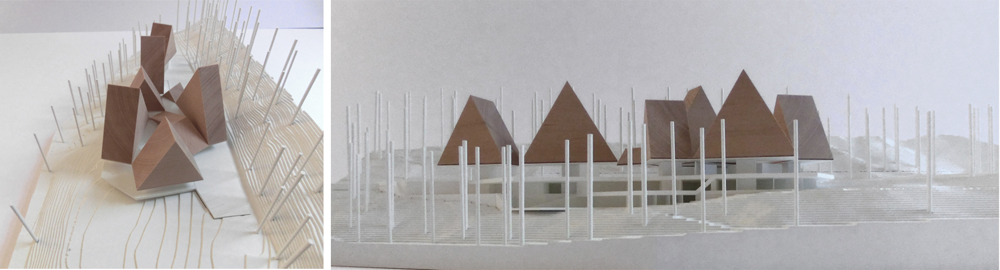
Modell
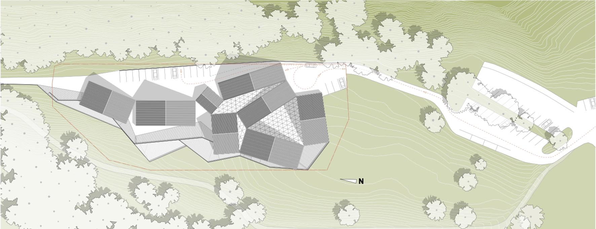
Lageplan
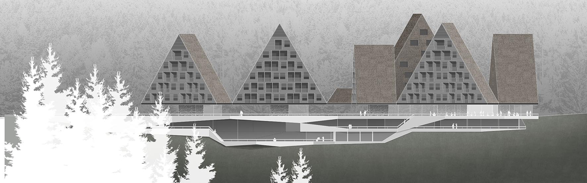
Ansicht Ost
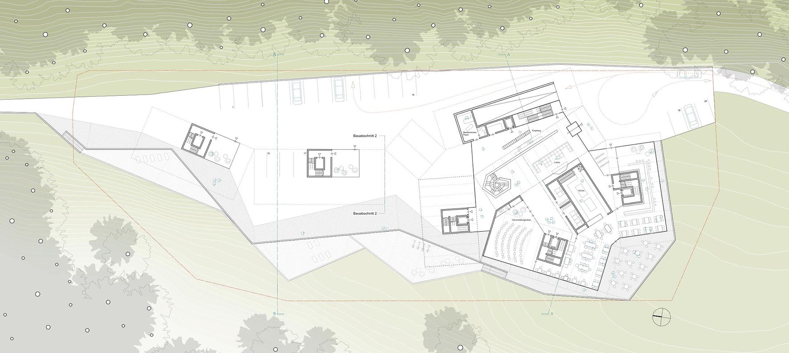
Zugangsstockwerk
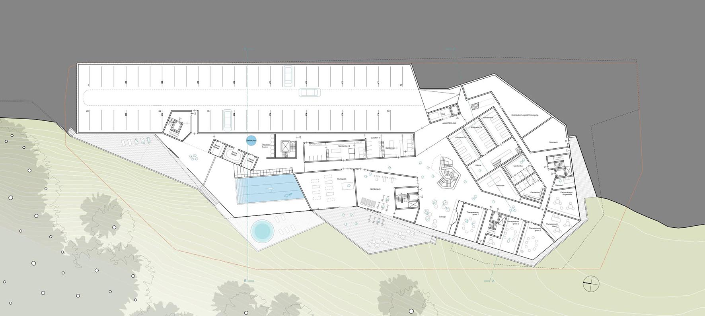
OG -1
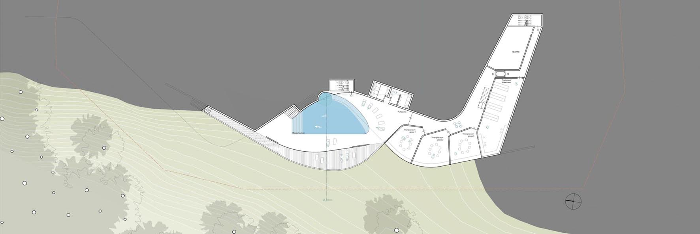
OG -2
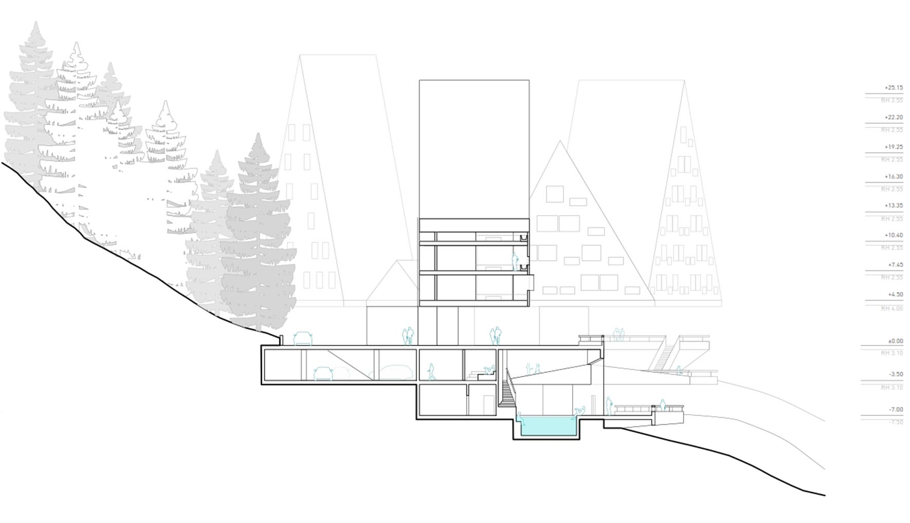
Querschnitt AA
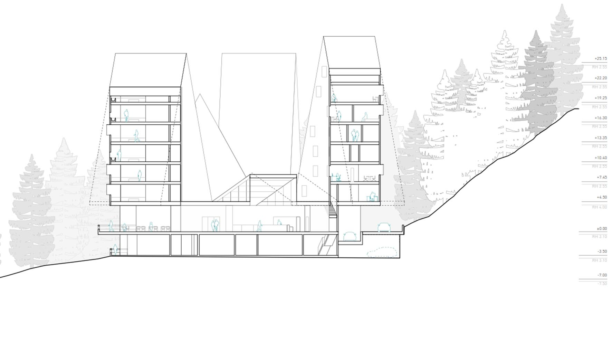
Querschnitt BB
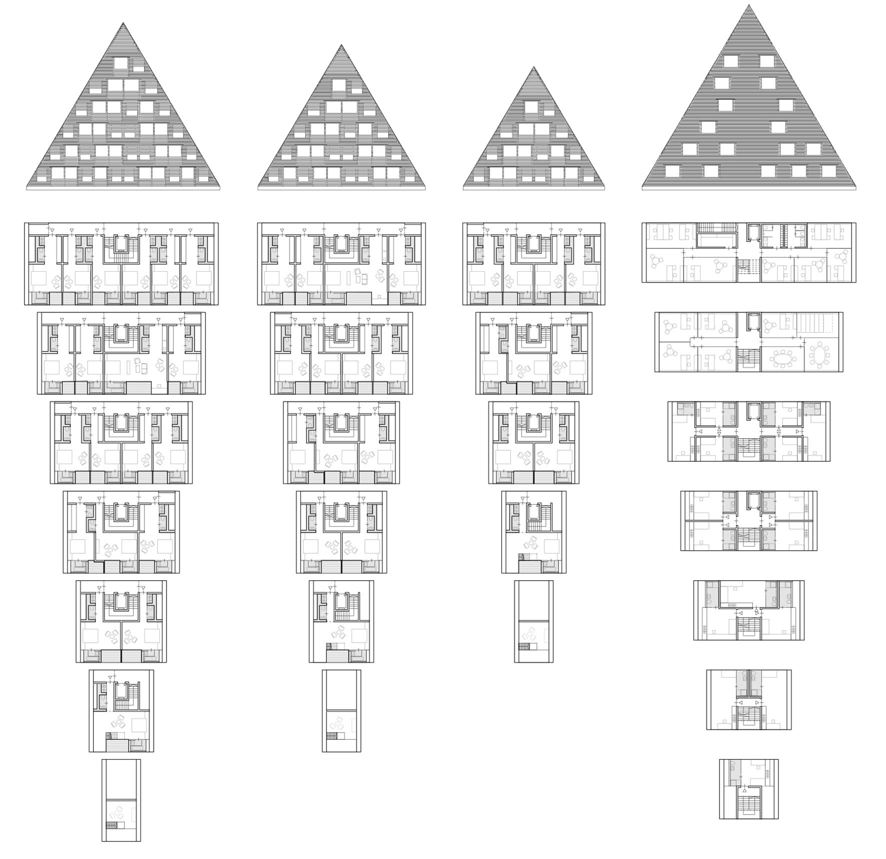
OG 1
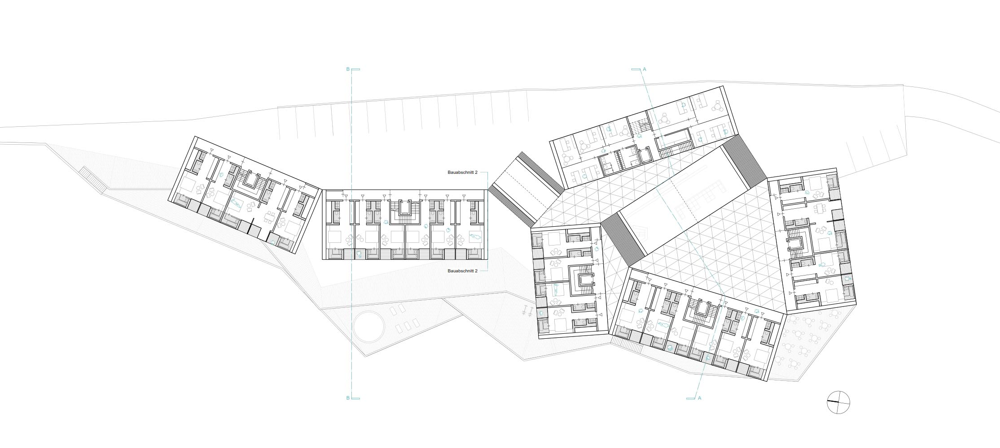
OG 1
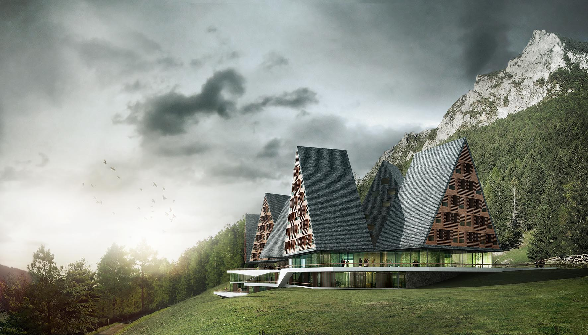
Haupteingang
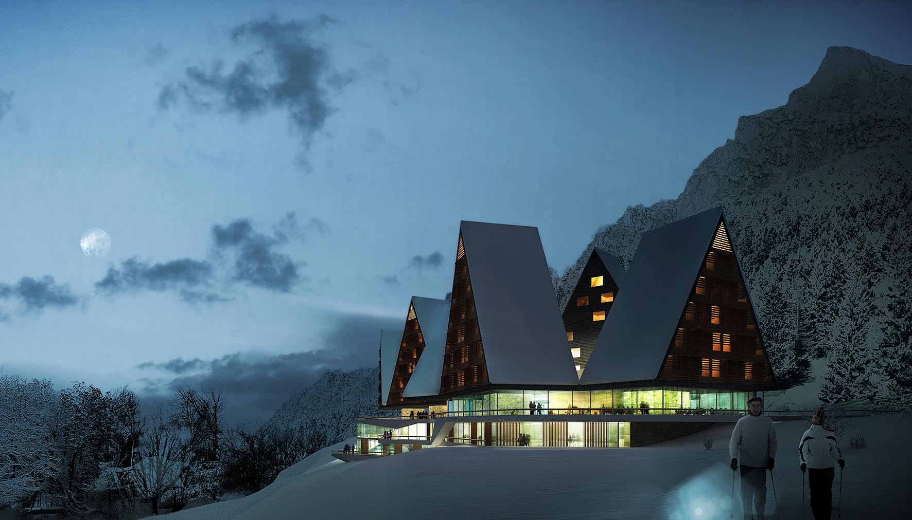
Nachtansicht des Haupteingangs
In der sich gegen Norden verjüngenden Waldlichtung des Grundstücks, schichtet sich das Gebäude gemäß der Topografie in einen 2 geschossigen Sockelbereich aus sich überschneidenden massiven Ebenen und Giebelhäusern aus Holz die über einem öffentlichen transparenten Erdgeschoss schweben.
Das Erdgeschoss wird Süd-ostseitig erschlossen. Hier befindet sich die Hotelvorfahrt und die Abfahrt in die Tiefgarage. Das Foyer mit der Lobby wird von einem raumhaltigen Giebeldach überspannt, an dessen Ecken sich vier weitere Giebelhäuser angliedern. Im Nördlichen Haus sind dabei die Verwaltung und die Mitarbeiterwohnungen untergebracht. In den drei übrigen befinden sich die Hotelzimmer. Angedient werden diese über Aufzüge, die direkt über den die Küche umgebenden Foyerbereich erschlossen werden.
Sämtliche Zimmer der Gäste sind mit Ausblick auf die Berge ausgerichtet. Verwaltung und Personalwohnungen orientieren sich zum Hang nach Norden und trennen dabei den Wohn und Verwaltungsbereich.
Im ersten und zweiten Untergeschoss befinden sich neben den Technik- und Nutzraumflächen für den Betrieb des Hotels, die Therapieräume und der Zugang zum SPA und Fitnessbereich.
Dieser Bereich wird über eine Treppe aus dem Lobbybereich erschlossen oder kann direkt aus den Wohnhäusern über die Aufzüge angefahren werden. SPA, Fitness- und Therapiebereich nehmen dabei die durch die polygonal überschneidenden Pattformen gut belichteten talseitigen Räume ein. Die notwendige Privatheit für diese Bereiche ist somit gewährleistet, erlaubt aber einen intensiven Bezug zur Umgebung.
KONSTRUKTION
Das Gebäude ist im Untergeschoss bis zum Erdgeschoss in konventioneller Stahlbetonbauweise vorgesehen. Dabei schieben sich die Geschosse in den Hang und nutzen die Topografie. Diese Maßnahme wirkt sich, neben der gewünschte Integration des großen Volumens in die Landschaft, positiv auf die zu bewegenden Aushubmassen und somit auf die Bauzeit und Baukosten aus. Die Massivbauweise wird bei den tragenden Wänden im Erdgeschoss und den Treppen-und Aufzugkernen fortgeführt.Die Decken der Obergeschosse können dann von diesen Erschließungskernen mit weiteren Betonwandscheiben abgehängt werden.
MATERIALITÄT
Neben der Rücksichtnahme auf die Topografie trägt auch die Materialisierung zur Einbindung in die Umgebung bei. Dabei nehmen das holzverkleidete Obergeschoss und die steinernen Terrassen der Untergeschosse ortstypische Bauweise auf und interpretieren diese neu. Dabei untersteichen die Materialien und deren Fügung, Anmutung und Alterung diesen zeitlosen, vertrauten, wertigen und damit nachhaltigen Ansatz. Die dem Ort angemessene und vertaute Materialisierung wird im Innenausbau fortgesetzt.
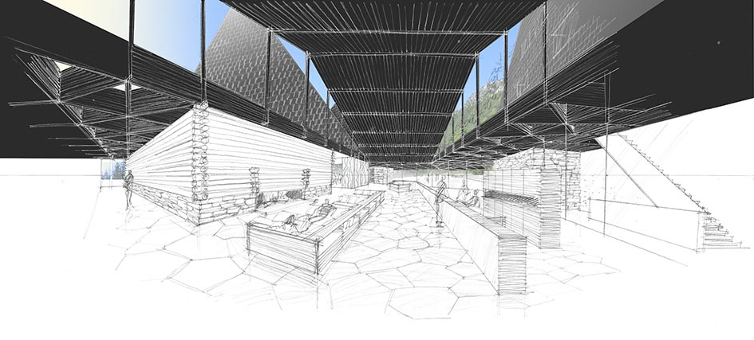
Ansicht der Lobby
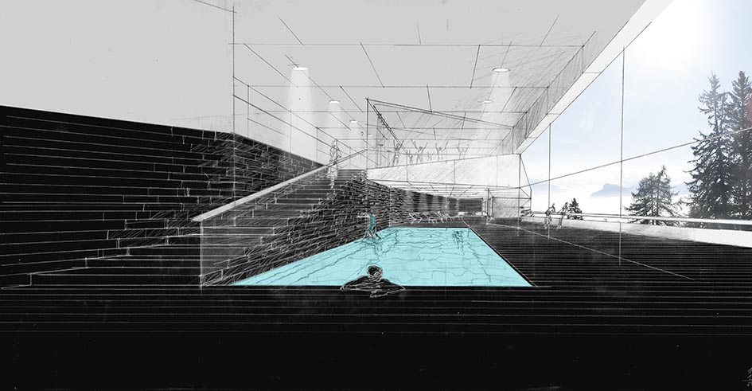
Ansicht des Spas
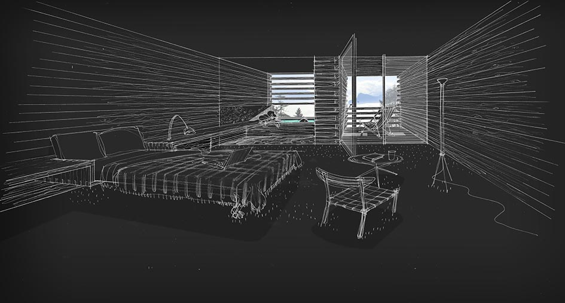
Ansicht des Zimmers